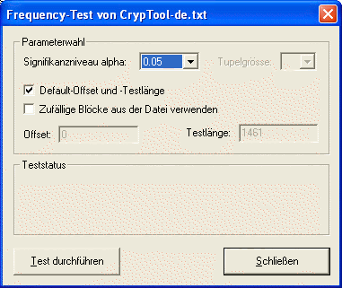
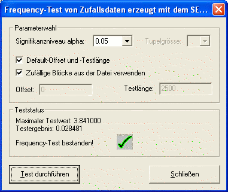
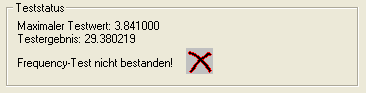

Diesen Dialog erreichen Sie über das Menü Analyse \ Zufallsanalyse \ Frequency-Test.
Das Dialogfenster des Frequency-Tests zeigt das folgende Bild:

In diesem Dialogfenster kann man verschiedene Parameter auswählen und bestimmen. Das Signifikanzniveau alpha kann zwischen 3 voreingestellten Werten ausgewählt werden: 0.01, 0.05 und 0.10.
Beim Frequency-Test kann die Tupelgröße nicht variiert werden, so dass die entsprechende Combobox nicht aktiv ist.
Mit der "Default Offset und Testlänge"-Checkbox entscheidet man sich für die Default-Werte (Offset = 0 und Testlänge = Dateilänge). Alternativ können benutzerdefinierte Werte im Test benutzt werden.
Mit der "Zufällig gewählte Testblöcke verwenden"-Checkbox kann man sich Zufallswerte für das Offset und die Testlänge erzeugen lassen. Hat der Benutzer Werte für Offset und Testlänge eingegeben und "Zufällig gewählte Testblöcke verwenden" angekreuzt, werden trotzdem die vom Benutzer definierten Werte für Offset und Testlänge benutzt.
Sind diese Werte falsch gewählt, erscheint eine Nachricht:
und zusätzlich eine Messagebox:

Mit der "Test durchführen"-Taste führt man den Test durch.
Nach dem Betätigung der "Test durchführen" Taste sollte Ihr Dialogfenster so aussehen:

Der Maximale Testwert ist ein statistischer Wert, der vom Signifikanzniveau abhängig ist und nicht überschritten wird, wenn der Test bestanden wird.
Das Testergebnis ist ein von dem Test erzeugter statistischer Wert, der mit dem Maximalen Testwert verglichen wird.
Wird der Test nicht bestanden, erscheint folgende Nachricht im Teststatus:

Mit Schließen verlässt man das Dialogfenster und kehrt zurück zum CrypTool-Hauptfenster.